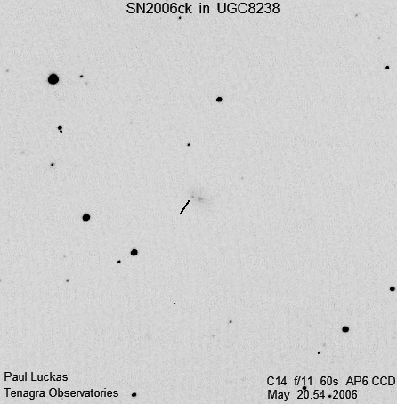

For the second month running, Tenagra Western Australia bags another discovery.
(click on image for larger version)

Electronic Telegram No. 518 Central Bureau for Astronomical Telegrams INTERNATIONAL ASTRONOMICAL UNION M.S. 18, Smithsonian Astrophysical Observatory, Cambridge, MA 02138, U.S.A. IAUSUBS@CFA.HARVARD.EDU or FAX 617-495-7231 (subscriptions) CBAT@CFA.HARVARD.EDU (science) URL http://cfawww.harvard.edu/iau/cbat.html
SUPERNOVA 2006ck IN UGC 8238 P. Luckas, Perth, W. Australia; O. Trondal, Oslo, Norway; and M.Schwartz, Patagonia, AZ, report the discovery of an apparent supernova (mag 17.4) on unfiltered CCD frames taken with the 0.35-m telescope at Perth on May 20.54 UT and the 0.81-m telescope at Patagonia on May 22.17 in the course of the Tenagra Observatory Supernova Search. SN 2006ck is located at R.A. = 13h09m40s.42, = Decl. = -01o02'57".2 (equinox 2000.0), which is 10".2 west and 3".0 south of the center of UGC 8238 (which itself has position end figures 41s.10, 54".2). Nothing was visible at the position of 2006ck on an image taken by Luckas on Mar. 29.70 (limiting magnitude about 18.0) or on a Digitized Sky Survey image from 1989 Feb.11 (limiting red mag 21.0).
Electronic Telegram No. 519
SUPERNOVA 2006ck IN UGC 8238 S. Blondin, M. Modjaz, R. Kirshner, and P. Challis, Harvard-Smithsonian Center for Astrophysics, report that a spectrogram (range 350-740 nm) of 2006ck (cf. CBET 518), obtained by P. Berlind on May 23.21 UT, shows it to be a supernova of type Ic around maximum light. The spectrum is most similar to that of the type-Ic supernova 1994I (Filippenko et al. 1995, Ap.J. 450, L11) at 2 days past V-band maximum.
Circular No. 8713
SUPERNOVAE 2006ci, 2006cj, 2006ck Three apparent supernovae have been found on unfiltered CCD frames: 2006ci by C. Colesanti, C. Jacques, E. Pimentel, and T. Napoleao (cf. IAUC 8658); 2006cj by R. Quimby, P. Mondol, and F. Castro (cf. IAUC 8622); and 2006ck by P. Luckas, O. Trondal, and M. Schwartz (cf. IAUC 8687). Additional magnitudes for 2006ci in ESO 182-G10: Apr. 5.39 UT, [19.0; May 19.05, 15.2. Nothing is visible at the location of 2006ci on a red Palomar Survey image from 1995. Additional approximate magnitudes for 2006cj: 2004 Dec. 15 and 2006 Jan. 10, [19.3; May 18.24, 18.0; 19.28, 17.7 (poor conditions). Spectroscopy by S. Blondin et al. (cf. CBET 517) on May 22.32 shows that 2006cj is a type-Ia supernova just past maximum. Additional magnitudes for 2006ck in UGC 8238: 1989 Feb. 11, [21.0 (Digitized Sky Survey, red); Mar. 29.70, [18.0 (Luckas); May 22.17, 17.4. Blondin et al. report (cf. CBET 519) that a spectrogram taken on May 23.21 shows 2006ck to be a type-Ic supernova near maximum.